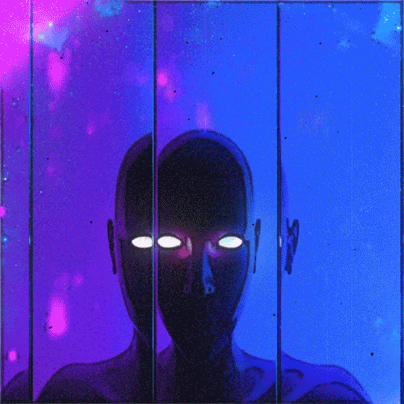
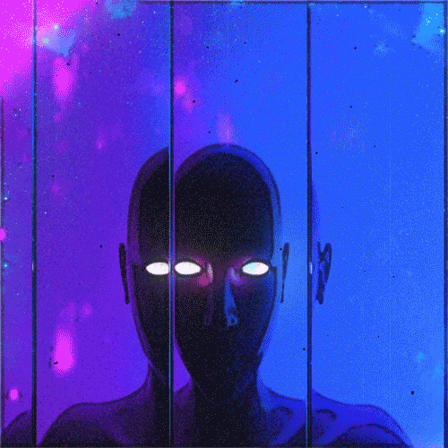
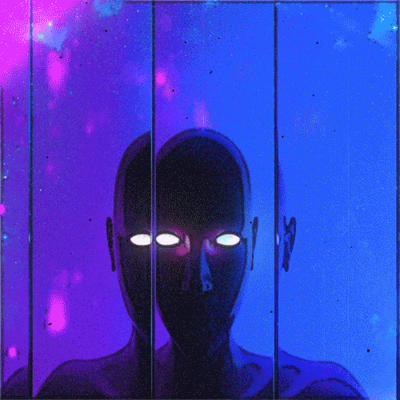
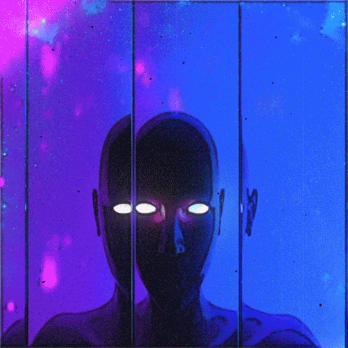

You rush back to the cave as fast as you can. You can hear Brenil's screams.
You search in the glowing cave, but you can't find the orb. It seems to be empty.
"You're trying to open the archway back to the human world, aren't you?"
You hear a voice echoing within the cave.
"Who are you?"
"I can help you... and your little friend. I have the orb you are looking for."
The voice hisses in the dark.
"All I need for you to do is to show me where your tribe resides.
After, I will give you the orb and help your friend out of their curse."
- "No, I'm sorry. I have to go."
- "The tribe lives by the pink lake. Give me the orb and help my friend."